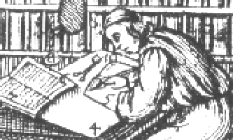

|  |
Text Encoding Initiative |
Welcome to the TEI Website |
News flash!First TEI Members Meeting to be held Pisa Nov 16/17 2001Elections to TEI Council and BoardRead full announcement |
Initially launched in 1987, the TEI is an international and interdisciplinary standard that helps libraries, museums, publishers, and individual scholars represent all kinds of literary and linguistic texts for online research and teaching, using an encoding scheme that is maximally expressive and minimally obsolescent.
The TEI consortium is hosted by four universities:
For current membership of the TEI, please check the members list. You can now join the Consortium online The TEI is sponsored by the Association for Computers and the Humanities (ACH), the Association for Computational Linguistics (ACL), and the Association for Literary and Linguistic Computing (ALLC). Major support for the project has come from the U.S. National Endowment for the Humanities (NEH), Directorate XIII of the Commission of the European Communities (CEC/DG-XIII), the Andrew W. Mellon Foundation, and the Social Science and Humanities Research Council of Canada. |